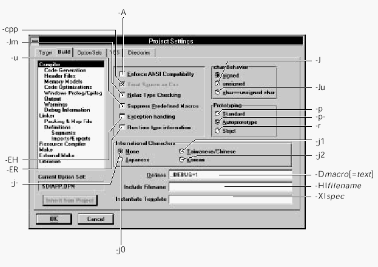

Home
| Search
| CTG
| RTL
| IDDE
| STL
Home
| Search
| CTG
| RTL
| IDDE
| STL
Last update Fri Apr 28 16:30:17 2006
|
Reference 1. Introducing Digital Mars C++ 2. Introducing the IDDE Part 2: Creating an Application with Digital Mars C++ 3. Starting a Project and Defining Workspaces 4. Generating an Application Framework 5. Defining Classes and Their Hierarchies 6. Editing Program Code 7. Adding Look and Feel with Resources 8. Testing an Application Part 3: Learning Digital Mars C++ by Example 9. Introduction to the Tutorial 10. Lesson 1: Create the DOS Application 11. Lesson 2: Generate an Application Framework 12. Lesson 3: Customize the Interface 13. Lesson 4: Add Messages with ClassExpress 14. Lesson 5: Add a Dialog Box with ClassExpress Part 4: More about Creating Programs 15. More about Projects and Workspaces 16. More about Project Build Settings 17. More about AppExpress 18. More about ClassExpress 19. Class Editor Reference 20. Hierarchy Editor Reference 21. Text Editor Reference 22. Using Version Control Part 5: More about Testing Programs 23. Controlling and Configuring the Debugger 24. Commands Available in Debugging Mode Part 6: About Managing Resources 25. ResourceStudio Resource Editor 26. Dialog Editor 27. Menu, Accelerator and String Table Editors 28. Bitmap, Cursor, Icon, and Font Editors 29. Version Information and Custom Resource Editors Part 7: Appendixes A. Expression Evaluation B. IDDE Settings and Command-Line Options C. Using NetBuild |
B. IDDE Settings and Command-Line OptionsThis appendix provides a series of figures that show the relationship between the settings on the Build page of the IDDE Project Settings dialog box and the command line options that you pass to the command line utilities. To opens the Project Settings dialog box, select Project Settings from the IDDE Project menu. Then click on the Build tab to select the Build page.The Build page comprises different subpages, each one containing specific options for the compiler, linker, .def file, resource compiler, and librarian utility. Chapter 16, More about Project Build Settings, describes in detail each of the subpages of the Build page. For detailed information on how these options affect the compilation and linking of your code, refer to the Digital Mars C++ Compiler and Tools Guide. This chapter consists of a series of figures showing subpages of the Build page. Each figure has callouts to each option that has a command-line equivalent. Mapping IDDE Options to Command-Line ParametersOptions in the callouts to the Compiler pages are passed to the dmc.exe compiler. Options in the callouts to the Linker subpage are passed to the optlink.exe linker. Definition file options (shown in the Definition subpages callouts) are placed in your project's .def file. Options for the resource compiler (Resource Compiler subpage) are passed to the Digital Mars resource compiler and linker utility, rcc.exe. Options for the librarian utility are passed to lib.exe.
 |